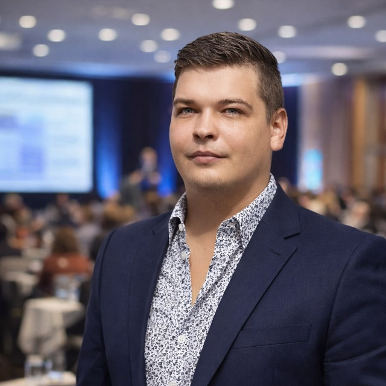

Первая встреча — 20 минут
Бесплатно
Расскажете запрос, я объясню, как могу помочь. Без обязательств продолжать — это просто возможность проверить, подходим ли мы друг другу.
Записаться на бесплатную встречуСемейный психолог · Онлайн и очно на о. Самуи · Опыт с 2016 года
Если в паре стало больше молчания, чем разговоров; если тревога мешает спать, а решения откладываются на «потом» — это рабочие запросы. Разберёмся вместе, бережно и по шагам.
Ответ обычно в течение дня · Пишет лично Александр, без ботов

Александр Красногор — семейный психолог, в профессии с 2016 года. Консультирует онлайн (Zoom, Telegram, Max) и очно на острове Самуи в Таиланде. Работает с тревогой, отношениями, выгоранием, самооценкой и кризисами методами КПТ, гештальт-терапии, ЭФТ и практик осознанности.
Первая встреча-знакомство 20 минут — бесплатно. Индивидуальная сессия 40–60 минут стоит 5000 ₽ онлайн или 2500 бат очно; работа с парой 90–120 минут — 10 000 ₽ онлайн или 5000 бат очно. Приём Пн–Пт, 9:00–20:00 по времени Самуи (UTC+7) — это 5:00–16:00 МСК.
Не нужно ждать «настоящего диагноза» или кризиса. К психологу приходят и со смутным «что-то не так» — это нормально.
Я работаю с запросами:
Постоянное беспокойство, панические атаки, тревога за близких, страх будущего, бессонница, навязчивые мысли. Учимся замечать триггеры и возвращать себе опору.
Постоянная самокритика, сравнение с другими, синдром самозванца, страх отказа. Разбираемся, откуда внутренний критик и как с ним договориться.
Ссоры по кругу, отдаление, ревность, охлаждение, конфликты из-за быта, детей, денег. Помогаю восстановить диалог, в котором обоим слышно.
Развод, расставание, утрата близкого, переезд, смена работы. Сопровождаю в точке, где старое уже не работает, а новое ещё не найдено.
«Зачем я всё это делаю?», ощущение пустоты при внешнем благополучии, экзистенциальные вопросы. Ищем не «правильный» ответ, а ваш собственный.
Хроническая усталость, цинизм к работе, потеря интереса к тому, что раньше радовало, раздражительность. Восстанавливаем контакт со своей энергией и границами.
Зависшие выборы: уходить ли, переезжать ли, рожать ли, менять профессию. Помогаю отделить «надо» и «хочу» и услышать собственные критерии.
Ответьте на 3 коротких вопроса — подскажу, что подойдёт именно вам и что ждать от первой бесплатной встречи.
Онлайн (Zoom, Telegram, Max) или очно на о. Самуи
40–60 минут индивидуально, 90–120 минут с парой
Обычно 1 раз в неделю, но обсудим комфортный для вас ритм
Всё, о чём мы говорим, остаётся между нами
Я использую научно обоснованные методы психотерапии. Нажмите на любой, чтобы узнать подробнее:
Помогает увидеть, как мысли, чувства и поведение связаны между собой. Вместе мы находим автоматические мысли, которые поддерживают тревогу или сниженное настроение, и учимся заменять их более реалистичными. Подход даёт конкретные инструменты для повседневной жизни — как реагировать на стресс, страх и навязчивые переживания.
Фокус на том, что вы переживаете «здесь и сейчас». Этот метод помогает лучше осознавать собственные чувства, потребности и то, как вы строите контакт с собой и другими. Работая с актуальным опытом, мы находим причины повторяющихся трудностей и ищем новые, более свободные способы быть в отношениях.
ЭФТ рассматривает эмоции как ценный источник информации о ваших потребностях. В индивидуальной работе она помогает понять глубинные переживания и разобраться с ними; в семейной и парной — увидеть, что стоит за повторяющимися ссорами, и восстановить эмоциональную близость.
Практики осознанного присутствия учат замечать мысли, чувства и телесные ощущения без оценки и борьбы с ними. Это снижает уровень стресса, помогает возвращать внимание из тревожных размышлений в настоящий момент и постепенно меняет привычные автоматические реакции.
Мой стиль работы — эмпатичный, но структурированный: я слушаю, поддерживаю и помогаю найти конкретные шаги для изменений.
Психологическое консультирование — не медицинская услуга и не заменяет консультацию врача-психиатра при тяжёлых психических расстройствах. При подозрении на клиническое состояние я сразу рекомендую обратиться к профильному специалисту.
Александр Красногор
Психолог
Регулярно прохожу личную терапию, супервизию и интервизию для поддержания профессиональной компетентности. Соблюдаю Этический кодекс психолога.
Дипломы и сертификаты — нажмите на изображение, чтобы увеличить
МГИ им. Е. Р. Дашковой · 2016
АНО «НИИДПО» · 2023
Институт прикладной психологии · 2024–2025
Институт прикладной психологии · 2025
Бесплатно
Расскажете запрос, я объясню, как могу помочь. Без обязательств продолжать — это просто возможность проверить, подходим ли мы друг другу.
Записаться на бесплатную встречу40–60 минут · один человек
Индивидуальная сессия для работы с тревогой, выгоранием, низкой самооценкой, переживанием потерь, поиском смысла и другими личными запросами. На первой встрече мы знакомимся, формулируем запрос и согласуем дальнейший план работы.
Записаться90–120 минут · пара или семья
Работа с парами и семьями: разбор конфликтных ситуаций, восстановление взаимопонимания, обсуждение ролей и ожиданий. Подходит, если хочется выйти из тупика повторяющихся ссор или вместе пережить кризисный период.
ЗаписатьсяПеренос или отмена встречи — не позднее, чем за 24 часа.
Нажмите на вопрос, чтобы увидеть ответ
Индивидуальная сессия длится 40–60 минут, работа с парой или семьёй — 90–120 минут.
Записаться можно через Telegram: @lex4747 или через Max. Александр отвечает лично, обычно в течение дня. Приём Пн–Пт, 9:00–20:00 по времени Самуи (UTC+7) — это 5:00–16:00 МСК.
Индивидуальная консультация — 5000 ₽ онлайн или 2500 бат очно на Самуи. Работа с парой — 10 000 ₽ онлайн или 5000 бат очно. Первая встреча-знакомство 20 минут — бесплатно.
Консультации проходят онлайн или очно — на ваш выбор. Онлайн — через Zoom, Telegram или Max; очно — на острове Самуи в Таиланде.
Да, всё, что обсуждается на сессии, остаётся между нами. Полная конфиденциальность гарантирована.
Нет. К психологу всё чаще обращаются не в крайнем случае, а чтобы разобраться раньше, чем станет хуже. Первая встреча — знакомство 20 минут, бесплатно: ничего не обязывает и помогает понять, подходим ли мы друг другу.
Если есть подозрение на клиническое состояние — тяжёлая депрессия, биполярное расстройство, выраженная тревога с соматикой — нужна консультация врача-психиатра. На первой встрече я помогу определиться. Если случай не для меня — честно скажу и порекомендую профильного коллегу.
Психотерапия — это совместная работа, и её эффективность во многом зависит от контакта со специалистом. Поэтому первая встреча 20 минут бесплатна — чтобы вы могли проверить, подходим ли мы друг другу. Если нет — ничего не теряете.
Часто полезнее начать индивидуально: разобраться со своей частью и через это — повлиять на отношения. Многие пары приходят к совместной работе позже, когда видят изменения в партнёре, который уже работает с психологом.
Да. Александр Красногор принимает очно на острове Самуи в Таиланде — место встречи согласуем в переписке. Очная сессия стоит 2500 бат индивидуально и 5000 бат для пары. Если вы не на Самуи, остаётся онлайн-формат: Zoom, Telegram или Max.
Напишите мне в любой удобный мессенджер — отвечу в течение дня. Если хочется, можно сначала просто познакомиться: первая встреча 20 минут — бесплатно.
Александр Красногор
Семейный психолог
Онлайн и очно на о. Самуи, Таиланд
Пн–Пт, 9:00–20:00 по времени Самуи (UTC+7) — это 5:00–16:00 МСК